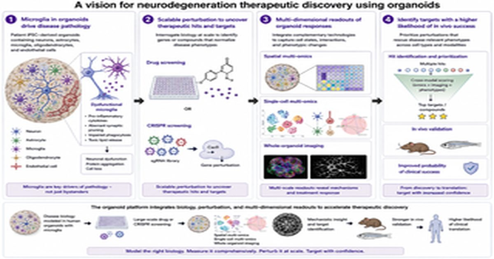

Клеточное разнообразие в нервных органоидах имеет решающее значение для моделирования нейродегенеративных заболеваний
shiying Liu, Shi-Yan Ng Нейровоспаление и сосудистая дисфункция являются отличительными признаками большинства нейродегенеративных заболеваний.
Поэтому для органоидов, предназначенных для моделирования нейродегенерации, иммунные и сосудистые клетки следует рассматривать как фундаментальные компоненты, а не как необязательные дополнения.
Нейровоспаление и сосудистая дисфункция являются отличительными признаками большинства нейродегенеративных заболеваний.
В этой Перспективе утверждается, что иммунные и сосудистые клетки должны быть